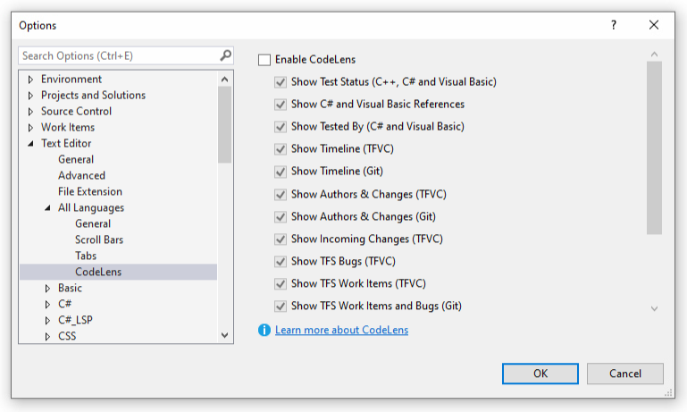
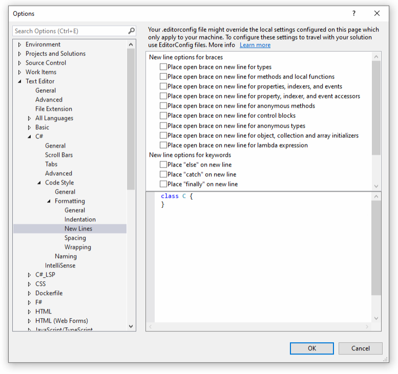
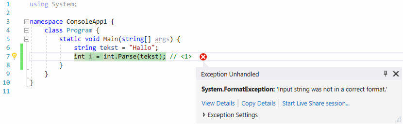
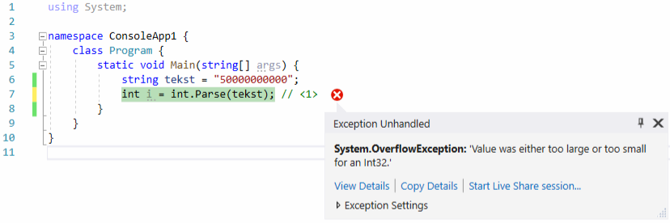

Programmeren Basis - Deel 02¶
1. Visual studio tips & tricks¶
1.1. Code Lens uitschakelen¶
Je hebt er misschien al op gelet dat Visual Studio overal '0 references' doorheen je code strooit? Dit is afkomstig van de Code Lens en is enkel nuttig in complexere programma’s.
Je kan dit uitzetten door bovenaan in de menubalk van Visual Studio voor Tools › Options… te kiezen. Er verschijnt dan een nieuw venster met allerlei instellingen :

Aan de linkerkant kun je nu de instellingen verder openklappen zoals hierboven getoond wordt :
-
Text Editor
-
All languages
- Code Lens
-
Tenslotte moet je rechtsbovenaan de optie 'Enable CodeLens' afvinken en op OK klikken.
1.2. Broncode formattering aanpassen¶
Je kunt Visual Studio je broncode netjes laten formatteren :
-
kies in de menubalk Edit › Advanced › Format Document
-
of gebruik de toetsencombinatie Ctrl+K en vervolgens Ctrl+D
Doe dit af en toe terwijl je code schrijft, het maakt je code overzichtelijker en je verspilt geen tijd met handmatig overal spaties en insprongen te typen.
We kunnen deze formattering een beetje aanpassen om vertical wat plaats te sparen. Kies in de menubalk weerom voor Tools › Options… zodat het ventster met instellingen verschijnt :

Klap aan de linkerkant de intellingen open zoals hierboven getoond wordt :
-
Text Editor
-
C#
-
Code Style
-
Formatting
- New Lines
-
-
-
Vink nu alles af onder
-
New line options for braces
-
New line options for keywords
en klik op OK.
2. Strings¶
2.1. Speciale symbolen in een string¶
Zoals we eerder zagen, gebruiken we aanhalingstekens (Engels : double quotes) om string literals af te bakenen. Ze geven het begin en het einde aan van de tekst die in de string waarde terechtkomt, maar maken er zelf geen deel van uit.
Bijvoorbeeld in dit code fragment staan twee string literals, nl. Programmeren en Hallo! :
De bijbehorende console output
... demonstreert dat de aanhalingstekens niet in de string vervat zitten, ze verschijnen immers niet op de console.
Als aanhalingstekens het begin en einde van een string literal vastleggen, hoe kunnen we dan een string literal schrijven waarin een aanhalingsteken voorkomt?
— Een oplettende lezer
Bijvoorbeeld, hoe kunnen we de tekst Druk op "ENTER" om te beginnen als een string literal schrijven?
Welnu, er bestaan escape sequences waarmee we speciale symbolen in een string literal kunnen krijgen. Deze beginnen allen met een backslash \ symbool, zodat de compiler ze kan herkennen en vervangen door het "echte" symbool dat we bedoelen.
Enkele escape sequences die van pas kunnen komen :
| Escape sequence | Het symbool dat in de string literal terechtkomt | Verduidelijking |
|---|---|---|
\" |
" |
een aanhalingsteken |
\n |
newline | een onzichtbaar symbool om een nieuwe regel te laten beginnen |
\\ |
\ |
een backslash |
Voorbeeld
Console.WriteLine("Druk op \"ENTER\" om te beginnen"); // (1)
Console.WriteLine();
Console.WriteLine("Regel 1\nRegel 2\nRegel 3"); // (2)
Console.WriteLine();
Console.WriteLine("Folder C:\\Program Files"); // (3)
De output hiervan is
-
De escape sequence
\"plaatst een aanhalingsteken in de string literal -
De escape sequence
\nzorgt ervoor dat er op een nieuwe regel wordt verdergegaan als de string op de console terechtkomt -
De escape sequence
\\plaatst een backslash in de string literal
Let ook op het gebruik van Console.WriteLine(); om een lege regel te bekomen.
2.2. Strings bouwen met '+'¶
Soms is het nodig om een grotere string op te bouwen uit kleine stukjes tekst en/of andere waarden.
In C# kun je hiervoor de + bewerking gebruiken om teksten aaneen te plakken, bijvoorbeeld
Console.WriteLine("Hello " + "World"); // (1)
string naam1 = "Jan";
string naam2 = "Piet";
string samen = naam1 + " en " + naam2; // (2)
Console.WriteLine(samen);
-
Hier plakken we
HelloenWorldtesamen tot 1 enkele string waarde (let op de spatie naHello) -
Hier plakken we 3 strings aaneen, twee namen met ertussenin de tekst
en(weerom, let op de spaties!)
De output is
De technische benaming voor deze "tekst plak" bewerking is string concatenation.
Belangrijk
Het is belangrijk dat je je realiseert dat de
` hier geen optelling voorstelt! We werken hier met string waarden en in deze context betekent `iets anders dan bij getallen.
Heel vaak zul je ook de waarde van een int of double variabele in een string willen stoppen, ook dit kan met de + operator.
int aantal = 3;
...
Console.WriteLine("ik kocht " + aantal + " broden"); // (1)
Console.WriteLine("ik kocht aantal broden"); // (2)
-
De waarde van de variabele
aantalwordt aan de string literals geplakt -
Oeps, de naam van de variabele
aantalis hier per ongeluk in een string literal terechtgekomen
De output is
-
Succes, de waarde van de variabele
aantalis blijkbaar in de string terechtgekomen -
Oeps! (zie hierboven)
Als je teksten en de waarden van variabelen aaneen plakt, moet je dus goed oppassen dat de naam van de variabelen niet in een string literal terechtkomt!
Nadelen¶
Als we een string opbouwen door string literals en variabelen aaneen te plakken, wordt de code al snel onoverzichtelijk door de vele " en + symbolen. Bovendien is het ook heel makkelijk om hier en daar een spatie te vergeten.
Tip
We zullen in een later deel van de de cursus een veel elegantere werkwijze tegenkomen : string interpolatie.
Soms is het verleidelijk om tijdens het opbouwen van een string, het resultaat van een berekening in te lassen. Dit maakt de code echter moeilijker te begrijpen en gevoelig voor fouten.
Voorbeeld
Onderstaande code probeert het totaal aantal items op de console te tonen. Er zijn 3 broden en 5 tomaten, dus 8 items in totaal.
int aantalBroden = 3;
int aantalTomaten = 5;
Console.WriteLine("totaal aantal items is " + aantalBroden + aantalTomaten);
Console.WriteLine("totaal aantal items is " + (aantalBroden + aantalTomaten));
De output hiervan is
De verwarring hierboven ontstaat doordat we twee soorten ` operatoren mengen : optelling van getallen en string concatenatie. Wat er precies gebeurt hangt ervan af hoe de compiler de ` interpreteert en blijkbaar hebben de haakjes hier invloed op.
Belangrijk
Meng geen berekeningen met string concatenatie, dit maakt je code moeilijker te begrijpen voor anderen (alsook je toekomstige zelf).
Voor dezelfde reden doe je beter ook geen berekeningen in een output opdracht zoals
Console.WriteLine.
3. Console invoer en uitvoer¶
3.1. Write en WriteLine¶
Het console venster houdt altijd een onzichtbare cursorpositie bij, dit is de plaats waar de tekst van de volgende output opdracht zal terechtkomen. Je herkent dit concept vast wel van je favoriete tekst editor : een blinkende cursor toont de positie waar getypte tekst zal terechtkomen.
Het onderstaande code fragment
... produceert de volgende output :
De Console.WriteLine opdracht schrijft dus de string die tussen de haakjes staat, op de console.
Deze opdracht plaatst echter na de tekst echter ook een (onzichtbaar) newline symbool (alsof er iemand op Enter zou drukken). Hierdoor verspringt de cursorpositie van de console naar het begin van de volgende regel, wat verklaart waarom de tekst van de volgende output opdracht op een nieuwe regel terecht kwam.
Er bestaat ook een Console.Write opdracht. Deze plaatst geen newline symbool op de console en laat de cursor dus achteraan z’n output staan. Als je Write gebruikt zal de eerstvolgende output dus op dezelfde regel terechtkomen.
Om dit te demonstreren herschrijven we het vorige fragment met Write i.p.v. WriteLine,
De output wordt nu :
Zoals je kunt zien, is de World tekst niet op een nieuwe regel terechtgekomen!
Belangrijk
Het verschil tussen een
Writeen eenWriteLineopdracht heeft niks te maken met hun 'eigen' output, het beïnvloedt enkel de volgende output opdracht!
Voorbeeld
Neem dit code fragment :
Console.Write("Hello"); // (2)
Console.WriteLine("World"); // (1)
Console.WriteLine("Hello"); // (1)
Console.Write("World"); // (2)
-
Writeschrijft geen newline symbool, dus we blijven op dezelfde regel -
WriteLinevoegt wel een newline symbool toe, dus de volgende output zal op een nieuwe regel beginnen
De output die verschijnt is
- Hier kwam een (onzichtbaar) newline symbool terecht, waardoor de volgende output op een nieuwe regel terechtkwam.
De officiële documentatie van Write en WriteLine kun je terugvinden op
-
https://docs.microsoft.com/en-us/dotnet/api/system.console.write
-
https://docs.microsoft.com/en-us/dotnet/api/system.console.writeline
3.2. ReadLine¶
We kunnen de opdracht Console.ReadLine(); gebruiken om tekst input van de gebruiker te bekomen. De opdracht pauzeert de uitvoering van het programma en wacht totdat de gebruiker tekst in de console typt en op ENTER drukt.
De tekst die werd ingetypt kunnen we capteren in een string variabele om verderop in het programma te gebruiken. De ENTER zelf komt op geen enkel wijze in de string terecht.
Console.Write("Typ uw naam : "); // (1)
string ingevoerdeNaam = Console.ReadLine(); // (2)
Console.Write("Uw naam is dus ");
Console.WriteLine(ingevoerdeNaam); // (3)
-
gebruik
Console.WritevoorConsole.ReadLinezodat de ingetypte tekst netjes na de vraag komt te staan! -
deze regel wacht tot de gebruiker iets intypt en op ENTER drukt. De ingevoerde tekst wordt in de variabele
ingevoerdeNaambewaard. -
de ingevoerde naam wordt ter illustratie terug op de console gezet.
Als de gebruiker 'Jan' intypt en op ENTER drukt, ziet de console er na afloop als volgt uit :
Merk op dat Console.ReadLine() een string waarde voorstelt en dus een expressie van type string is.
De officiële documentatie van ReadLine kun je terugvinden op
- https://docs.microsoft.com/en-us/dotnet/api/system.console.readline
4. Conversie tussen de datatypes¶
Soms beschikken we over een waarde van een bepaald type in ons programma (bv. de tekst "123" als string) en willen daar een waarde van een ander type uit afleiden (bv. het getal 123 als int).
Dit gebeurt bijvoorbeeld in elk programma dat de gebruiker om een getal vraagt : het resultaat van Console.ReadLine() is immers altijd een string! In eerste instantie hebben we dus enkel de ingetypte tekst en moeten daar dan een getal uit afleiden om mee te gaan rekenen.
Een dergelijke afleiding tussen verschillende datatypes noemt men een type conversion. Dit woord impliceert dat er iets wordt omgezet of veranderd, maar dat is niet het geval : we bekomen steeds een nieuwe waarde op basis van een bestaande waarde.
Bij zo’n conversie kunnen er twee problemen opduiken :
-
er kan geen nieuwe waarde worden afgeleid
-
de conversie faalt tijdens de uitvoering (al naargelang hoe je dit aanpakt ontstaat er wel/niet een foutsituatie)
-
bv. uit de string
"Hallo"kun je geen int getal afleiden
-
-
er gaat informatie verloren
-
dit is een zogenaamde narrowing conversion
-
je moet hiervoor expliciet iets doen in je code om de compiler tevreden te houden
-
bv. uit de double
8.4leiden we de int8af en verliezen het stukje na de komma.
-
Er bestaat trouwens ook een widening conversion waarbij je een nieuwe waarde afleidt uit een 'beperkter' type, bv. een double waarde afleiden uit een int waarde. In dit geval kan de conversie impliciet gebeuren en hoef je niks speciaals in je code te schrijven.
Voorbeeld van impliciete conversies die falen
string tekst = "123";
int geheelGetal = 123;
double kommaGetal = 123.456;
int i = tekst; // Compiler foutmelding // (1)
int j = kommaGetal; // Compiler foutmelding // (2)
double d = tekst; // Compiler foutmelding // (3)
string s1 = geheelGetal; // Compiler foutmelding // (4)
string s2 = kommaGetal; // Compiler foutmelding // (5)
-
Cannot implicitly convert type 'string' to 'int'
-
Cannot implicitly convert type 'double' to 'int' (dit is immers een narrowing conversion)
-
Cannot implicitly convert type 'string' to 'double'
-
Cannot implicitly convert type 'int' to 'string'
-
Cannot implicitly convert type 'double' to 'string'
Voorbeeld van een impliciete conversie die slaagt
- een widening conversion van int naar double (i.e. er ontstaat een double waarde
123.0)
We hebben tot nu toe drie datatypes gezien (string, int en double) en zullen hierna de expliciete conversies bespreken. Vermits we doorgaans met variabelen werken zullen we dit in de code voorbeelden ook steeds doen.
4.1. String en int¶
Om een string voorstelling van een int te bekomen, gebruiken we .ToString() op de int waarde.
Voorbeeld
- Hier zal
.ToString()een string"123"produceren op basis van de waarde vangeheelGetal.
Terzijde : mocht je je nu afvragen waarom string concatenation met een getal geen .ToString() vereist : dit heeft te maken met de manier waarop de + operator gedefinieerd is (achter de schermen wordt er automatisch .ToString opgeroepen).
Om een int waarde te bekomen uit een string gebruiken we int.Parse() met de string waarde tussen de haakjes.
Voorbeeld
- Hier zal
int.Parse()het getal123produceren op basis van de tekst"123".
Deze conversie zal mislukken tijdens de uitvoering van een programma, als de string geen geschikte getalvoorstelling bevat! Er ontstaat een exception (i.e. een foutsituatie) en dit programma stopt vroegtijdig met een foutmelding.
Voorbeeld waarbij int.Parse() een FormatException veroorzaakt
Probeer dit stukje code beslist eens uit :
- Hier ontstaat een exception (een foutsituatie)
Daar ons programma geen rekening houdt met deze exception, eindigt het programma bij deze int.Parse().
De foutmelding die je krijgt is Exception Unhandled : System.FormatException: 'Input string was not in a correct format.'.

Zoals je kunt zien in de screenshot gaat het om een format exception die ontstond omdat er geen int herkend werd in de string.
We zullen in een later deel zien hoe we dit soort conversie kunnen aanpakken zonder het risico te lopen dat ons programma crasht.
Voorbeeld waarbij int.Parse() een OverflowException veroorzaakt
Probeer dit stukje code beslist eens uit :
- Hier ontstaat een exception (een foutsituatie)
Daar ons programma geen rekening houdt met deze exception, eindigt het programma bij deze int.Parse().
De foutmelding die je krijgt is Exception Unhandled : System.OverflowException: 'Value was either too large or too small for an Int32.'.

Het gaat zo te zien om een overflow exception die ontstond omdat het getal in de string te groot is om als een int waarde voor te stellen.
Weerom, in een later deel zullen we zien hoe we dit soort conversie kunnen aanpakken zonder het risico te lopen dat ons programma crasht.
4.2. String en double¶
Voor conversies tussen strings en double waarden gebruiken we quasi dezelfde mogelijkheden als voor int waarden : .ToString() en double.Parse().
Belangrijk
Let erop dat de taalinstellingen van je computer invloed kunnen hebben op de tekstvoorstelling van een kommagetal, bij console input en output. Meer bepaald, welk symbool er tussen het geheel en de fractie staat (een komma of een punt) : bv.
123,456vs.123.456.In C# broncode schrijf je voor een double literal echter steeds
123.456, met een punt dus.
We gebruiken .ToString() om een string te bekomen op basis van een double waarde.
Voorbeeld
- Hier zal
.ToString()een string"123.456"(of"123,456") produceren op basis van de waarde vankommaGetal.
In de omgekeerde richting gebruiken we double.Parse().
Voorbeeld
- Hier zal
double.Parse()het getal123.456produceren op basis van de tekst"123.456".
Ook hier zal de conversie mislukken tijdens de uitvoering van een programma als de string geen geschikte getalvoorstelling bevat, net als bij int.Parse()!
Er is echter nog een bijkomend probleem waar je rekening mee moet houden, afhankelijk van de taalinstellingen op je computer
string tekst1 = "123.456"; // scheidingsteken is een punt
double d1 = double.Parse(tekst1);
Console.WriteLine(d1);
string tekst2 = "123,456"; // scheidingsteken is een komma
double d2 = double.Parse(tekst2);
Console.WriteLine(d2);
Merk op dat de twee kommagetallen string literals zijn en geen double literals.
Op een computer met Amerikaanse taalinstellingen verschijnt de volgende output :
Door de Amerikaanse taalinstellingen
-
wordt een punt gebruikt om het geheel en de fractie te scheiden
-
wordt een komma geïnterpreteerd als scheidingsteken voor de duizendtallen
Hoe ziet de output eruit op jouw computer?
Indien deze strings afkomstig zijn van gebruikersinput bestaat dus het risico dat de gebruiker zich niet bewust is van de taalinstellingen en het verkeerde scheidingsteken gebruikt (zonder dat het programma dit opmerkt).
4.3. Int en double¶
Voor int en double conversies is de situatie eenvoudiger dan bij de string conversies van hierboven.
We zagen reeds dat het mogelijk is om een impliciete omzetting van int naar double te doen, dit is immers een widening conversion. Dit betekent dat er geen informatie verloren gaat : de compiler kan een nieuwe double maken op basis van de int waarde (met ,0000… voor de fractie).
Bij berekeningen is het soms echter nodig om een expliciete conversie te doen met Convert.ToDouble(), of een int literal te vervangen door een equivalente double literal.
Voorbeeld
In de oplossing van een vorige oefening stond dit fragment :
int lengteInCm = 182;
int gewichtInKg = 72;
double lengteInM = lengteInCm / 100.0; (1)
double bmi = gewichtInKg / (lengteInM * lengteInM);
Console.WriteLine(bmi);
- de compiler ziet in de deling een
doublewaarde100.0staan en zal dus een deling voor kommagetallen toepassen. Op de waarde vanlengteInCmwordt dan een impliciete conversie naardoubletoegepast.
Als we echter lengteInCm / 100 hadden geschreven, dan zou de compiler een deling voor gehele getallen gebruikt hebben. In dat geval krijgt lengteInM de waarde 1 i.p.v. 1.82 en is de bmi berekening niet meer correct.
Als alternatief zouden we ervoor kunnen kiezen om een expliciete conversie te doen op lengteInCm :
int lengteInCm = 182;
int gewichtInKg = 72;
double lengteInM = Convert.ToDouble(lengteInCm) / 100; (1)
Convert.ToDouble(lengteInCm)is een expressie van typedouble, dus de compiler zal een deling voor kommagetallen gebruiken. Op100wordt dan een impliciete conversie naardoubletoegepast.
Soms is het dus nodig om in een berekening met louter int waarden, minstens één waarde te vervangen door een double waarde zodat de compiler gaat rekenen met kommagetallen. Als er in die berekening een int literal voorkomt is dit gemakkelijk : plaats er gewoon .0 achter.
Maar wat als de berekening volledig uit int variabelen bestaat en er geen enkele literal in voorkomt? Dan is er geen gelegenheid om ergens .0 achter te zetten en kan je niet anders dan een expliciete conversie van int naar double te doen met Convert.ToDouble().
Voorbeeld van een expliciete conversie met Convert.ToDouble()
int aantalKoeken = 17;
int aantalPersonen = 5;
double aantalKoekenPerPersoon =
Convert.ToDouble(aantalKoeken) / aantalPersonen; // (1)
Console.Write("Iedere persoon krijgt " + aantalKoekenPerPersoon + " koek(en)");
- Het type van de expressie ConvertToDouble(aantalKoeken) is
doubledus er wordt een deling voor kommagetallen gekozen.
Dan bekijken we eens de andere richting, van double naar int.
De omzetting van double naar int is een narrowing conversion en moet hoedanook expliciet gebeuren. We gebruiken hiervoor Convert.ToInt32().
double d1 = 7.4;
int i1 = Convert.ToInt32(d1);
Console.WriteLine(d1+" geeft "+i1);
double d2 = 7.5;
int i2 = Convert.ToInt32(d2); // (1)
Console.WriteLine(d2 + " geeft " + i2);
double d3 = 7.6;
int i3 = Convert.ToInt32(d3);
Console.WriteLine(d3 + " geeft " + i3);
double d4 = 8.4;
int i4 = Convert.ToInt32(d4);
Console.WriteLine(d4 + " geeft " + i4);
double d5 =8.5;
int i5 = Convert.ToInt32(d5); // (2)
Console.WriteLine(d5 + " geeft " + i5);
double d6 = 8.6;
int i6 = Convert.ToInt32(d6);
Console.WriteLine(d6 + " geeft " + i6);
-
de conversie van
7.5 -
de conversie van
8.5
De output van dit fragment is enigszins verrassend :
-
de conversie van
7.5is 8 -
de conversie van
8.5is 8
Zo te zien gebeurt er een afronding die best vertrouwd lijkt
-
x.4wordt naar beneden afgerond -
x.6wordt naar boven afgerond
maar de conversies van 7.5 en 8.5 zijn wellicht wat minder evident. Een kommagetal x.5 wordt steeds naar het dichtstbijzijnde even getal afgerond. Dit heet "round half to even" of ook wel "banker’s rounding".
Merk op dat ook deze conversie kan falen omwille van een OverflowException indien het kommagetal te groot is om als een int waarde voor te stellen :
Voorbeeld van een OverflowException bij Convert.ToInt32()
-
dit getal is te groot voor het int datatype
-
Hier ontstaat een exception (een foutsituatie)
Daar ons programma geen rekening houdt met deze exception, eindigt het programma bij deze Convert.ToInt32().
De foutmelding die je krijgt is Exception Unhandled : System.OverflowException: 'Value was either too large or too small for an Int32.'.
5. Getallen inlezen met ReadLine en Parse¶
Als je een getal van de console wil inlezen heb je twee variabelen nodig
-
een variabele om de tekst bij te houden die werd ingelezen
-
een variabele om het getal bij te houden (dat je na conversie bekomt uit de ingelezen tekst)
Je zult dus twee gelijkaardige namen voor die variabelen moeten bedenken.
Voorbeeld : voor het inlezen van een leeftijd
Enkele mogelijke namen voor de twee variabelen :
-
leeftijd
-
leeftijdAlsGetal
-
leeftijdAlsTekst
-
stringLeeftijd (*)
-
intLeeftijd (*)
-
enz…
(*) dit zijn bijzonder slechte namen, stop nooit het type in de naam van een variabele.
Vermits je verderop in het programma wellicht met de numerieke variabele zult verder werken geef je die variabele een kortere/mooiere naam. De tekstuele leeftijd heb je na de conversie zelden nog nodig, dus die krijgt de langere/lelijkere naam.
Voorbeeld : inlezen van een leeftijd
Benoem de variabelen als volgt
-
leeftijdvoor de numerieke waarde -
leeftijdAlsTekstvoor de ingelezen tekst
en gebruik deze code voor je copypasta :
Console.Write("Geef uw leeftijd : ");
string leeftijdAlsTekst = Console.ReadLine();
int leeftijd = int.Parse(leeftijdAlsTekst);
Mmmmmm…. Lekker!
Indien de gebruiker iets intypt waardoor de conversie mislukt, zal ons programma crashen. We gaan later zien hoe we daar rekening mee kunnen houden, voorlopig gaan we ervan uit dat gebruikers altijd braafjes doen wat van hen verlangd wordt.
6. Controlestructuren¶
In de programma’s die we tot nu toe schreven werden alle opdrachten netjes na elkaar uitgevoerd, van boven naar onder. We zeggen dat de opdrachten samen een sequentie vormen en het programma sequentieel doorlopen wordt.
Bij de opdrachten in een programma zijn er twee volgorden van belang :
-
de volgorde van de opdrachten in de broncode
-
de volgorde waarin de opdrachten worden uitgevoerd
In een sequentie zijn deze beide volgorden exact gelijk.
Om interessantere programma’s te kunnen maken, moeten deze volgorden echter van elkaar kunnen verschillen. Denk bijvoorbeeld aan een programma dat afhankelijk van de ingevoerde leeftijd een andere output op de console moet zetten.
In navolging van de CPU instructieset, boden de eerste programmeertalen sprong instructies waarmee de uitvoering naar eender waar in de broncode kon gestuurd worden. Deze ultieme vrijheid bleek echter een grote bron van fouten en maakte het vaak zeer lastig om broncode te begrijpen (zgn. spaghetticode).
Latere programmeertalen vervingen deze ongebreidelde sprong instructies door rijkere taalelementen die we controlestructuren noemen : ze controleren (lees : bepalen) de volgorde waarin opdrachten worden uitgevoerd in het programma.
Vrijwel elke moderne programmeertaal bevat alleszins deze drie soorten controlestructuren :
-
sequentie : opdrachten uitvoeren in de volgorde waarin ze in de broncode staan
-
selectie : stukken code wel of niet uitvoeren (op basis van één of andere voorwaarde)
-
iteratie : stukken herhalen (wederom afhankelijk van een voorwaarde)
Van elke soort zijn er doorgaans meerdere varianten aanwezig in een programmeertaal. Verderop in dit deel behandelen we een eerste soort selectie structuur : if/else!
Controlestructuren werken vaak op meerdere regels code en dan is het nodig om zo’n stuk code af te bakenen. We doen dit met accolades ({ en }) en noemen zo’n stuk code een code block.
In de programma’s die we tot nu toe schreven zaten al afgebakende stukken code, bv. bij Main stond een code block dat ons ganse programma omvatte :
static void Main() { // (1)
Console.Write("Geef uw leeftijd : ");
string leeftijdAlsTekst = Console.ReadLine();
int leeftijd = int.Parse(leeftijdAlsTekst);
} // (2)
-
accolade
{duidt begin van code block aan -
accolade
}duidt einde van code block aan
We zullen straks zien dat we code blocks ook in elkaar kunnen nesten : een code block kan gerust andere code blocks bevatten!
7. Controlestructuur : if¶
Met een if codestructuur kunnen we een code block wel of niet laten uitvoeren, afhankelijk of aan een bepaalde voorwaarde is voldaan.
Elke if structuur bestaat dus uit een voorwaarde en de code block. De algemene vorm is
Er zijn twee mogelijkheden :
-
als tijdens de uitvoering WEL aan
voorwaardeis voldaan, wordtcode blockuitgevoerd -
als tijdens de uitvoering NIET aan
voorwaardeis voldaan, wordtcode blockovergeslaan
Voorbeeld
Console.Write("Geef uw leeftijd : ");
string leeftijdAlsTekst = Console.ReadLine();
int leeftijd = int.Parse(leeftijdAlsTekst);
if (leeftijd < 18) { // (1)
Console.WriteLine("U bent nog niet volwassen."); // (2)
Console.WriteLine("U mag nog niet gaan stemmen."); // (2)
}
-
de voorwaarde van de if-structuur is
leeftijd < 18 -
het code block dat zal uitgevoerd worden indien
leeftijddaadwerkelijk een waarde bevat die kleiner is dan18
Er zijn nu twee mogelijke volgorden van uitvoering:
-
als wel aan de voorwaarde is voldaan, wordt het code block uitgevoerd en verschijnen er twee regels output
-
als niet aan de voorwaarde is voldaan, wordt het code block overgeslaan en verschijnt er geen verdere output
Een eerste mogelijke uitvoering
Een tweede mogelijke uitvoering
Zoals je zit komt er in dit geval geen verdere output, het code block wordt overgeslaan omdat niet aan de voorwaarde leeftijd < 18 is voldaan.
8. Waarden vergelijken¶
In een programma zullen we heel vaak waarden met elkaar moeten vergelijken. Het resultaat van zo’n vergelijking kan dan het verdere verloop van het programma beïnvloeden, bv. door bepaalde stukken code selectief over te slaan.
Het komt er dus op aan om te weten wat de vergelijkingsmogelijkheden zijn in onze programmeertaal.
Veronderstel dat x en y twee numerieke expressies zijn (beiden int of beiden double). Dan kun je ze als volgt vergelijken :
| Vergelijking | Betekenis |
x == y |
is x 'gelijk aan' y ? |
x != y |
is x 'verschillend van' y ? |
x < y |
is x 'kleiner dan' y ? |
x <= y |
is x 'kleiner dan of gelijk aan' y ? |
x > y |
is x 'groter dan' y ? |
x >= y |
is x 'groter dan of gelijk aan' y ? |
Dit komt je wellicht bekend voor uit een wiskunde les van lang geleden.
Let op
Let erop dat
==een vergelijking voorstelt en dat je dus niet=mag gebruiken.Het
=symbool gebruiken we immers al om een waarde toe te kennen aan een variabele!
Merk op dat er ook tegengestelden zijn :
-
<en>=zijn elkaars tegengestelde -
>en<=zijn elkaars tegengestelde -
==en!=zijn elkaars tegengestelde
Let op
Let op bij het vergelijken van double waarden : door afrondingsfouten kan de waarde soms minimaal afwijken van wat je verwacht!
Je kan bijvoorbeeld nagaan of een waarde 'dicht genoeg' bij een andere waarde ligt, als alternatief voor een exacte vergelijking met
==.
Een eenvoudig voorbeeld met int expressies
Console.Write("Temperatuur?: ");
string temperatuurAlsTekst = Console.ReadLine();
int temperatuur = int.Parse(temperatuurAlsTekst);
if (temperatuur <= 0) { // (1)
Console.WriteLine("Bij deze temperatuur vriest het.");
}
Console.Write("Dank je voor het invoeren van de temperatuur.");
- hier vergelijken we de waarde van een int variabele met een int literal.
Je kunt twee string expressies s1 en s2 als volgt vergelijken :
| Vergelijking | Betekenis |
s1 == s2 |
is s1 'dezelfde tekst als' s2 ? |
s1 != s2 |
is s1 niet 'dezelfde tekst als' s2 ? |
Met 'dezelfde tekst als' bedoelen we : dezelfde lengte en exact dezelfde symbolen op alle posities (hoofdletter en kleine letters zijn verschillend!)
Een eenvoudig voorbeeld met string expressies
Console.Write("Typ hierachter het woord 'Supercalifragilisticexpialidocious' : ");
string input = Console.ReadLine();
if (input != "Supercalifragilisticexpialidocious") { // (1)
Console.WriteLine("Blijven proberen, de volgende keer lukt het je vast wel!");
}
- hier vergelijken we de waarde van een string variabele en een string literal.
9. Controlestructuur : if/else¶
Met een if/else codestructuur kunnen we laten selecteren welk van twee code blocks er moet uitgevoerd worden : ofwel het ene ofwel het andere. De keuze wordt gestuurd door een bijbehorende voorwaarde. Indien aan de voorwaarde is voldaan wordt het ene uitgevoerd, zoniet wordt het andere uitgevoerd (nooit allebei!!).
Elke if/else structuur bestaat dus uit een voorwaarde en twee code blocks. De algemene vorm is
Er zijn twee mogelijkheden :
-
als tijdens de uitvoering WEL aan
voorwaardeis voldaan, wordtcode block 1uitgevoerd -
als tijdens de uitvoering NIET aan
voorwaardeis voldaan, wordtcode block 2uitgevoerd
Er wordt altijd exact één van beide code blocks uitgevoerd.
Voorbeeld
Console.Write("Geef uw leeftijd : ");
string leeftijdAlsTekst = Console.ReadLine();
int leeftijd = int.Parse(leeftijdAlsTekst);
if (leeftijd < 18) { // (1)
Console.WriteLine("U bent een jongere."); // (2)
} else {
Console.WriteLine("U bent een volwassene."); // (3)
}
-
de voorwaarde van de if/else structuur is
leeftijd < 18 -
het code block dat zal uitgevoerd worden indien
leeftijdeen waarde bevat die 'kleiner is dan `18’ -
het code block dat zal uitgevoerd worden indien
leeftijdeen waarde bevat die NIET 'kleiner is dan `18’
Als we het programma uitvoeren en een leeftijd ingeven, dan kan de uitvoering twee kanten op wanneer we aan het if (leeftijd < 18) gedeelte komen :
-
indien er WEL is voldaan aan die voorwaarde, dan
-
wordt het bovenste _code block uitgevoerd
-
en verschijnt er
U bent een jongere.
-
-
indien er niet is voldaan aan die voorwaarde, dan
-
wordt het onderste code block uitgevoerd
-
verschijnt er
U bent een volwassene.
-
Een eerste mogelijke uitvoering
Een tweede mogelijke uitvoering
Terzijde : if/else of twee maal if ?
Je zou misschien kunnen denken dat elke if/else structuur kan geschreven worden als een opeenvolging van twee if structuren?
Bijvoorbeeld, als we het vorige stuk code hernemen :
if (leeftijd < 18) {
Console.WriteLine("U bent een jongere.");
} else {
Console.WriteLine("U bent een volwassene.");
}
en dit omvormen tot
if (leeftijd < 18) { // (1)
Console.WriteLine("U bent een jongere.");
}
if (leeftijd >= 18) { // (2)
Console.WriteLine("U bent een volwassene.");
}
-
de oorspronkelijke voorwaarde
-
de tegengestelde voorwaarde
In dit geval, leveren beide codefragmenten hetzelfde gedrag op voor ons programma. Verderop zie je een voorbeeld waarbij er wel een verschil is.
Een if/else constructie heeft hier drie voordelen t.o.v. twee opeenvolgende if structuren :
-
minder typwerk
-
je hoeft de tegengestelde voorwaarde niet te schrijven en kan daar dus geen fout bij begaan
-
er zal altijd maar één van beide code blocks worden uitgevoerd, nooit allebei
Tip
Gebruik altijd een if/else structuur i.p.v. twee opeenvolgende if structuren met tegengestelde voorwaarden.
Een voorbeeld waarin twee opeenvolgende if’s niet hetzelfde opleveren als een if/else
Indien de uitvoering van het eerste code block, de waarde van de tweede voorwaarde beïnvloedt dan kan het gebeuren dat beide code blocks worden uitgevoerd!
Bijvoorbeeld :
Console.Write("Aantal personen?: ");
string personenAlsTekst = Console.ReadLine();
int personen = int.Parse(personenAlsTekst);
Console.Write("Aantal glazen?: ");
string glazenAlsTekst = Console.ReadLine();
int glazen = int.Parse(glazenAlsTekst);
if (glazen < personen) {
// code block 1
Console.WriteLine("We hebben glazen tekort, we openen een nieuwe doos met 6 glazen...");
glazen = glazen + 6;
} else {
// code block 2
Console.WriteLine("We hebben meer dan voldoende glazen.");
}
Als we dit programma uitproberen met 8 personen en 3 glazen, is de output als volgt :
Aantal personen?: 8
Aantal glazen?: 3
We hebben glazen tekort, we openen een nieuwe doos met 6 glazen... (1)
- je ziet aan de output dat enkel code block 1 werd uitgevoerd.
Veranderen we nu de if/else structuur naar twee opeenvolgende if structuren, dan krijgen we :
if (glazen < personen) { // (1)
// code block 1
Console.WriteLine("We hebben glazen tekort, we openen een nieuwe doos met 6 glazen...");
glazen = glazen + 6;
}
if (glazen >= personen) { // (1)
// code block 2
Console.WriteLine("We hebben meer dan voldoende glazen.");
}
- Let op de tegengestelde voorwaarden
Als we dit gewijzigde programma uitvoeren, weerom voor 8 personen en 3 glazen, dan krijgen we
Aantal personen?: 8
Aantal glazen?: 3
We hebben glazen tekort, we openen een nieuwe doos met 6 glazen... (1)
We hebben meer dan voldoende glazen. (2)
-
output van code block 1
-
output van code block 2
Je ziet dus dat nu beide code blocks worden uitgevoerd, wat niet de bedoeling was!
In dit eenvoudige voorbeeld hebben we het enigszins moeten forceren, maar in complexe broncode kan dit echt problemen geven als je niet oplet.
Kortom, een if/else structuur is niet 100% gelijkwaardig met twee opeenvolgende if-structuren.
We geven altijd de voorkeur aan een if/else structuur, omwille van de drie voordelen die aangehaald werden.
10. Het boolean datatype¶
We zagen in het voorgaande dat er tijdens de uitvoering een voorwaarde gecontroleerd werd en dat er twee mogelijke uitkomsten waren :
-
er is aan de voorwaarde voldaan
-
er is niet aan de voorwaarde voldaan
Een voorwaarde als leeftijd < 18, stelt dus op een bepaald moment in de uitvoering een waarde voor. Deze waarde kun je bv. interpreteren als
-
waar / onwaar
-
klopt / klopt niet
-
juist / verkeerd
-
ja / neen
-
etc.
Vermits leeftijd < 18 een waarde voorstelt, is het dus ook een expressie! Het datatype van deze expressie is bool wat een afkorting is van boolean ter ere van George Boole.
Het bool datatype heeft slechts twee mogelijke waarden : true en false, maar kan op precies dezelfde manier gebruikt worden als een andere datatype.
Een boolean variabele declareren en initialiseren met een boolean literal doe je als volgt :
Een boolean variabele kan gebruikt worden om de tweevoudige toestand van iets bij te houden (aan/uit, ja/neen, goed/fout, …) of het resultaat van een vergelijking te bewaren. Het is gebruikelijk om zo’n variabele met is te laten beginnen : isRoker, isVolwassen, isGesloten, isIngeschreven, etc.
Voorbeeld
Console.Write("Geef uw leeftijd : ");
string leeftijdAlsTekst = Console.ReadLine();
int leeftijd = int.Parse(leeftijdAlsTekst);
bool isJongere = (leeftijd < 18); // (1)
Console.Write("De waarde van de variabele isJongere is : " + isJongere); // (2)
-
de variabele
isJongerewordt hier geïntroduceerd en we bewaren het resultaat van de vergelijkingleeftijd < 18. -
de variabele
isJongerewordt gebruikt in een string concatenatie.
Een eerste mogelijke uitvoering
Een tweede mogelijke uitvoering
Nu we het bool datatype kennen, kunnen we iets meer vertellen over de voorwaarde in een if structuur. Hernemen we nog eens diens algemene vorm
- de voorwaarde moet een
boolexpressie zijn
Indien de bool expressie in <1> op precies dat moment tijdens de uitvoering (!) de waarde true heeft, dan wordt code block uitgevoerd. Mocht de waarde false zijn dan wordt het code block overgeslaan.
Voor een if/else structuur geldt dit natuurlijk ook.
We kunnen dus eender welke boolean expressie als voorwaarde gebruiken, bv. een bool variabele :
Console.Write("Geef uw leeftijd : ");
string leeftijdAlsTekst = Console.ReadLine();
int leeftijd = int.Parse(leeftijdAlsTekst);
bool isJongere = (leeftijd < 18);
if (isJongere) { // (1)
Console.WriteLine("U bent een jongere.");
} else {
Console.WriteLine("U bent een volwassene.");
}
- hier wordt de boolean variabele
isJongeregebruikt als voorwaarde van een if/else structuur
Op dezelfde manier kunnen we zien dat alle vergelijkingen die we gezien hebben (met <, >=, ==, etc.) eigenlijk boolean expressies zijn die een true of false waarde voorstellen tijdens de uitvoering.
11. Een demonstratie¶
De meeste oefeningen uit de eerste delen van deze cursus bestaan telkens uit drie stukken :
-
input afhandelen
-
berekeningen maken
-
output produceren
Een demonstratie met alles door elkaar
// Input afhandelen
Console.Write("Geef de actuele temperatuur in : ");
string temperatuurAlsTekst = Console.ReadLine();
int temperatuur = int.Parse(temperatuurAlsTekst);
// Berekeningen maken
bool isWarm = (temperatuur > 0);
if (isWarm) {
Console.WriteLine("Gelukkig vriest het niet bij " + temperatuur + " graden.");
} else {
Console.WriteLine("Bij deze temperatuur vriest het.");
}
// Output produceren
Console.Write("Dank je voor het invoeren van de ");
if (isWarm) {
Console.Write("warme ");
}
Console.Write("temperatuur.");
Let erop hoe
-
de tekstuele input wordt omgezet naar een numerieke waarde
-
de boolean variabele
isWarmgebruikt wordt om niet 2xtemperatuur > 0in onze code op te moeten nemen. -
de if en if/else structuren selectief de output aanpassen
-
het woordje
warmewordt ingelast doorConsole.Writete gebruiken in combinatie met een if structuur.